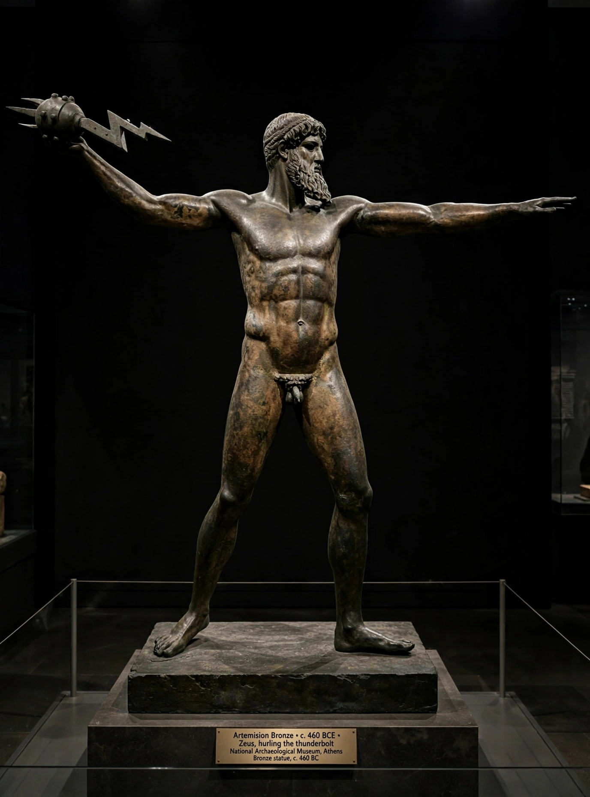

From Wikipedia, the free encyclopedia
| Zeus | |
|---|---|
| Religion | Ancient Greek religion |
| Abode | Mount Olympus |
| Symbols | Thunderbolt, eagle, oak, aegis |
| Parents | Cronus and Rhea |
| Consort | Hera (among others) |

Zeus is the sky and thunder god in ancient Greek religion and mythology, who rules as king of the gods of Mount Olympus. Son of the Titans Cronus and Rhea, he overthrew his father's generation in the Titanomachy, divided the cosmos with his brothers Poseidon (sea) and Hades (underworld), and thereafter upheld order, law and fate — hurling thunderbolts at transgressors while fathering gods and heroes in countless myths.
Zeus was worshipped across the Greek world, most famously at Olympia, where the Olympic Games were held in his honour and Pheidias' colossal gold-and-ivory statue of him stood as one of the Seven Wonders. The Romans identified him with Jupiter. His myths — the births of Athena from his head and Dionysus from his thigh, his transformations to approach mortal women — were retold by artists from Phidias to Rubens and remain staples of Western culture.